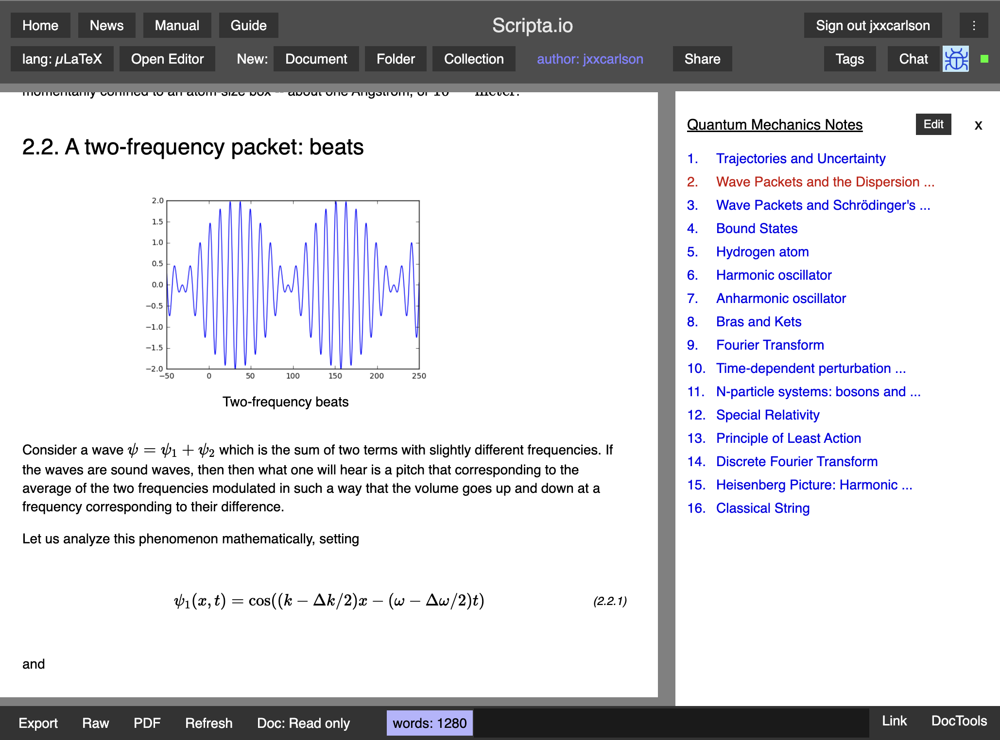
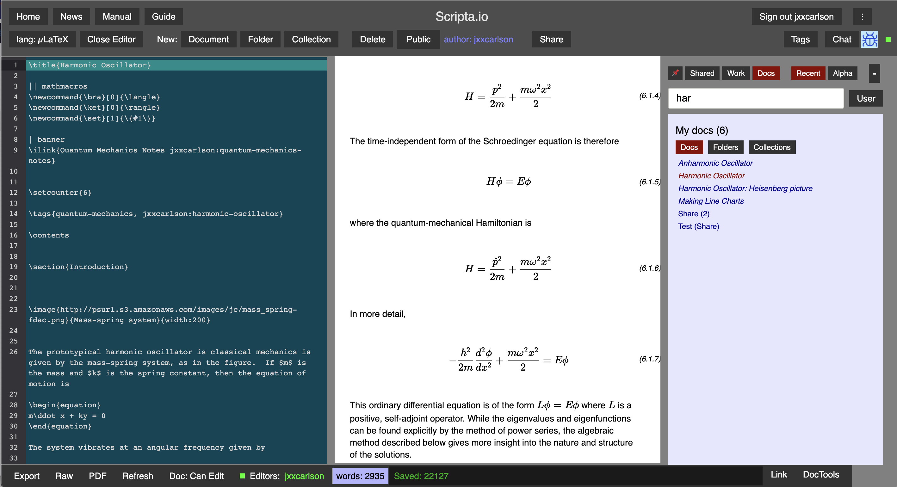
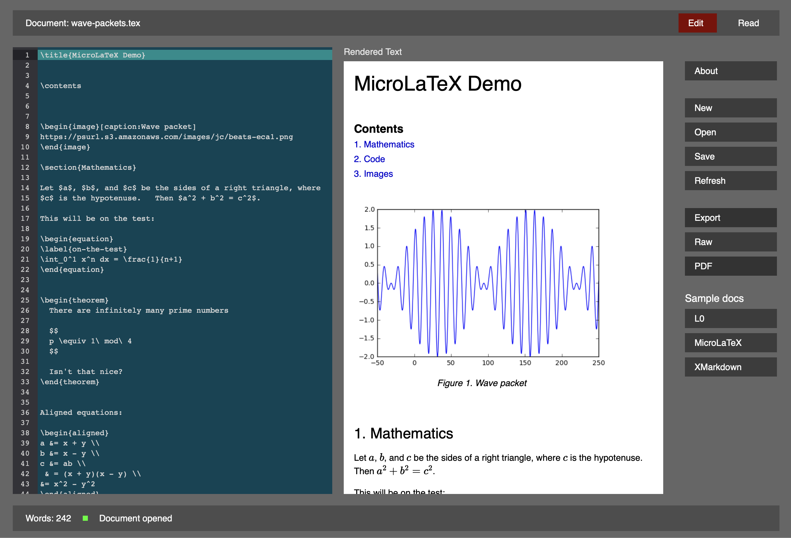

The Scripta Project
This document is intended for Scripta developers.
Scripta is an editing and publishing system for technical documents (mathematics, physics, etc.). It consists of three components
- Scripta.io, a web app
- Scripta Desktop, for Mac OS (fat binary), soon to be cross-compiled for Linux and Windows.
- The Scripta compiler
There is also a very simple live demo app. You can edit the text at will. Note, however, that this app does not have the advanced editing features offered by Scripta.io and Scripta Desktop.
All of the above are written in Elm, a pure functional language that compiles to Javascript. See the Tech Stack section below for more information and links to source code.
(( This document is a work-in-progress and will remain so for a good while. ))
Screenshots
Scripta.io, a notebbook document

Scripta.io, an ordinary document

Scripta Desktop

Compiler
The Scripta compiler supports three markup languages
- L0
- MicroLaTeX
- XMarkdown
L0 has a syntax inspired by Lisp; MicroLaTeX is an implementation of LaTeX, and XMarkdown is like Markdown, but with some extra features, e.g., TeX-style mathematical text.
See this live example for a simple demonstration of microLaTeX (source code here). You can edit the text of the example app at will. Scripta.io is a full-featured use case that makes use of the compiler's error recovery facilities and which implements synchronization of source and rendered text: click on rendered text to highlight and bring into view the corresponding source text; select a block of source text and press ctrl-S (for "sync") to highlight the corresponding rendered text and bring it into view.
The compiler is open-source, with the code hosted on Github) and with some documentation (work in progress). See also the example source code
Tech stack
Both the app and the compiler are written in Elm, a pure functional language that compiles to Javascript. The app also uses the Lamdera framework, which permits one to write both the front and the backend in Elm. See this short note on Lamdera. Mathematical text is rendered using KaTeX and the editor relies on Codemirror 6. The interface to Elm for both of these is via custom elements.
Scripta Desktop is built with Tauri.app. See this article for some notes on how it was assembled. Briefly, Tauri is a way of converting a web app built with most any language/framework including Elm into a desktop app. It has both good security and small asset size.
Source code:
-
Scripta.io: not currently open source
Note
Most of the rest of this document concerns the web app and is intended to help the app developers.